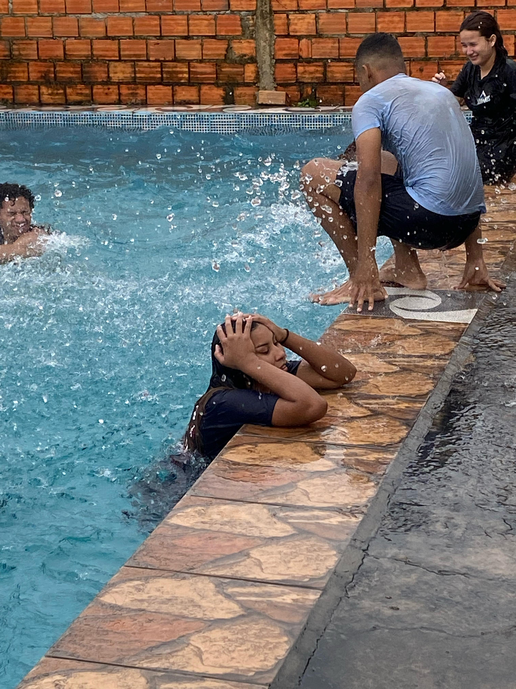
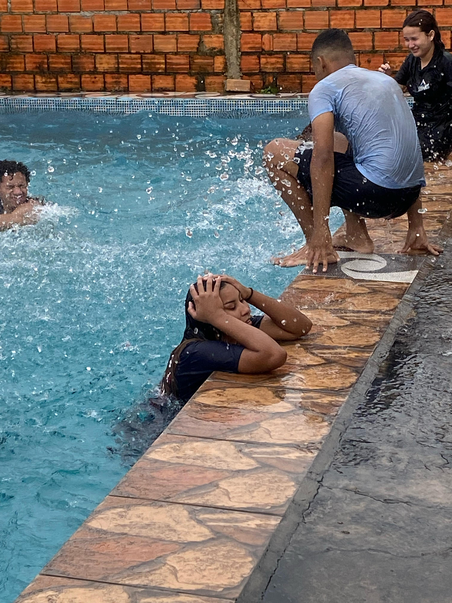

Geração Resgate 🌄
Foi ali que tudo começou. Cultos cheios de unção, risadas e uma amizade que cresceu no altar e se espalhou para a vida.
Noite do Hot-Dog ğŸŒ
Todo mundo junto de novo. Oramos, comemos e depois rimos até a barriga doer. Ninguém foi embora cedo (como sempre).
Comendo no meio da oração, Jesus perdoa, mas a fome não! 🎥
Não existe problema que um lanche não resolva. 🎥
Piu-Piu 🎥
Almoço no Gabriel 🍽
O almoço, mais um rolê que virou memória.

Banco Imobiliário 🎥
Dia de Igarapé 🌊
Sol, resenha e águas geladas. Mais um rolê que virou memória afetiva.


Bituba 🎥
Noite da Pizza 🍕
Na casa da Geovana, todo mundo junto de novo. Pedaço por pedaço, o coração ficou mais cheio que o estômago.
Dia de Piscina 💦
Na piscina da Vitória, entre mergulhos e risadas, a água levou o calor e deixou só alegria.

 


Piscina 🎥
Bituba 🌊
Curtindo o sol, os jogos e a leveza que a natureza traz.